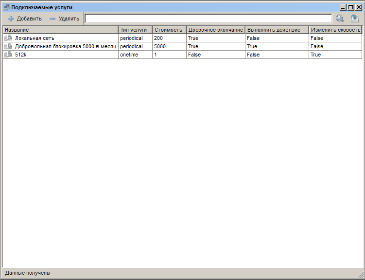
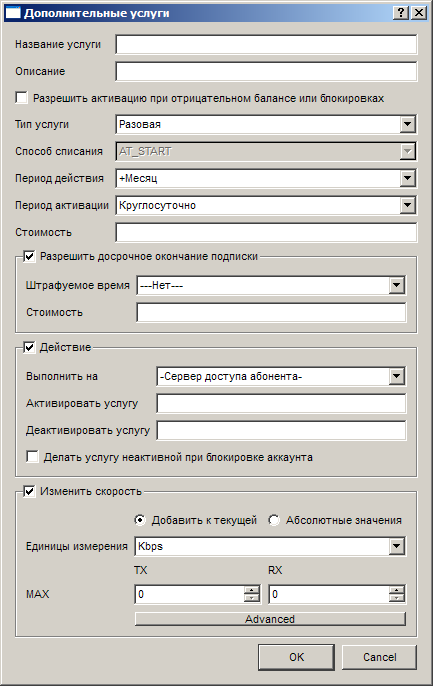
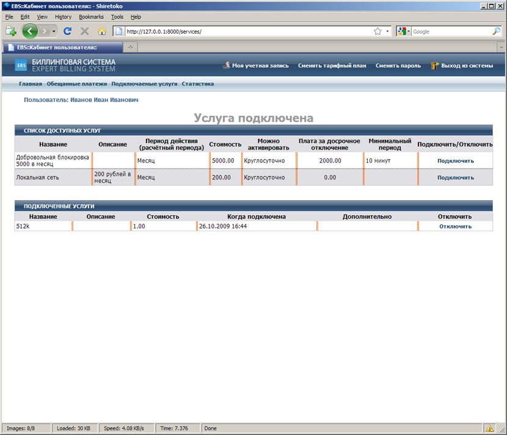

|
Назначение и особенности |
Top Previous Next |
|
Подключаемые услуги - это отдельная сущность ExpertBilling, которая позволяет выполнять тарификацию дополнительных услуг. С помощью подключаемых услуг легко реализуются такие возможности как "Добровольная блокировка счёта", "Увеличение скорости на определённый промежуток времени", "Снятие различных ограничений на доступ к услугам".
 Список подключаемых услуг
Рассмотрим устройство и логику работы подключаемых услуг.
 Настройка подключаемой услуги
Поле "Название услуги" служит для её строкового представления. Это поле, также отображается в веб-кабинете пользователя:
 Веб-кабинет пользователя. Подключаемые услуги.
Поле "Описание" служит для ввода дополнительной информации о услуге, которая будет отображена клиентам в веб-кабинете. В этом поле рекомендуется указывать особенности тарификации услуги и её фунция. Флажок "Разрешить активацию при отрицательном балансе и блокировках" рекомендуется устанавливать в том случае, если действие услуги не даст никакого эффекта из-за невозможности автризации абонента. К примеру увеличение скорости бессмысленно, если у абонента заблокирован доступ в интернет. Поле "Тип услуги" служит для указания способа тарификации услуги: разовая услуга или периодчиеская услуга. В случае разовой услуги списание средств происходит сразу после её активации. По истечению срока действия услуги она будет отключена. В случае периодической услуги списание средств происходит по правилу "Способ списания" и деактивация услуги происходит после соответствующего действия администратора или абонента. Поле "Тип услуги" позволяет задать способ тарификации периодической услуги: AT_START - списание средств происходит в начале расчётного периода, AT_END - списание средств происходит в конце расчётного периода, GRADUAL - списание средств происходит в течении расчётного периода аналогично обычным периодчиеским услугам. Поле "Период действия" служит для указания периода действия подключаемой услуги в случае разовой услуги и расчётного периода в случае периодической услуги. В данном поле доступны только те расчётные периоды, коорые начинаются при активации. В веб-кабинете пользователя занчащий "+" в начале услуги обрезается автоматчиески(см скриншот веб-кабинета). Поле "Период активации" служит для указания времени, когда услуга может быть активаирована(к примеру по выходым с 2 до 3 ночи). В поле "Стоимость" указывается соимость подключаемой услуги. Группа "Разрешить досрочное окончание подписки" позволяет настроить параметры самостоятельного отключения услуги. Поле "Штрафуемое время" служит для указания минимального периода с начала активации услуги до истечения которого при отключении услуги будет списан штраф. Поле "Стоимость" в этой группе указывает цену штрафа.
Использование штрафа разумно в том случае, если пользователь деактивирует подключаемую периодическую услугу со списанием средств AT_END до наступления конца периода, а также в других случаях чтобы минимизировать потери провайдера.
Группа "Действия" позволяет настроить действия биллинг-системы на серверах доступа при активации/деактивации подключаемой услуги. Поле "Выполнить на сервере доступа" позволяет выбрать сервер доступа, на котороый по SSH из настроек сервера доступа будут посланы команды на активацию/деактивацию услуги. Поля "Активировать услугу" и "Деактивировать услугу" являются командами, которые посылаются на выбранный сервер доступа. Перед отправкой тело команд разбирается анализатором кода и вхождения слов $access_type, $password, $username, $user_id, $account_ipn_ip, $account_vpn_ip, $account_mac_address заменяются на соответствующие значения. Эти значения могут быть переданы в качестве параметров для идентификации абонента, над которым будет выполнено какое-либо действие. Как правило, в качестве команд указываются полные пути к скриптам, которые выполняют требуемые действия на сервере(открывают доступ к портам, блокируют или разблокируют учётную запись пользователя и др.)
Флажок "Делать услугу неактивной при блокировке учётной записи абонента" позволяет выполнять действие на отключение услуги при уходе абонента в отрицательный баланс или наличию блокировок по лимитам и балансу.
Группа "Изменить скорость" позволяет создать подключаемую услугу, которая изменит скорость абонентской линии(выставит фиксированные значения в килобитах, мегабитах, процентах от текущей скорости) или добавит к текущей скорости указанные значения).
Список доступных для активации подключаемых услуг на каждом тарифном плане настраивается в парамерах тарифного плана. This help file was created with an unregistered evaluation copy of Help & Manual. © EC Software. All rights reserved. This message will not appear if you compile this help file with the registered version of Help & Manual. |